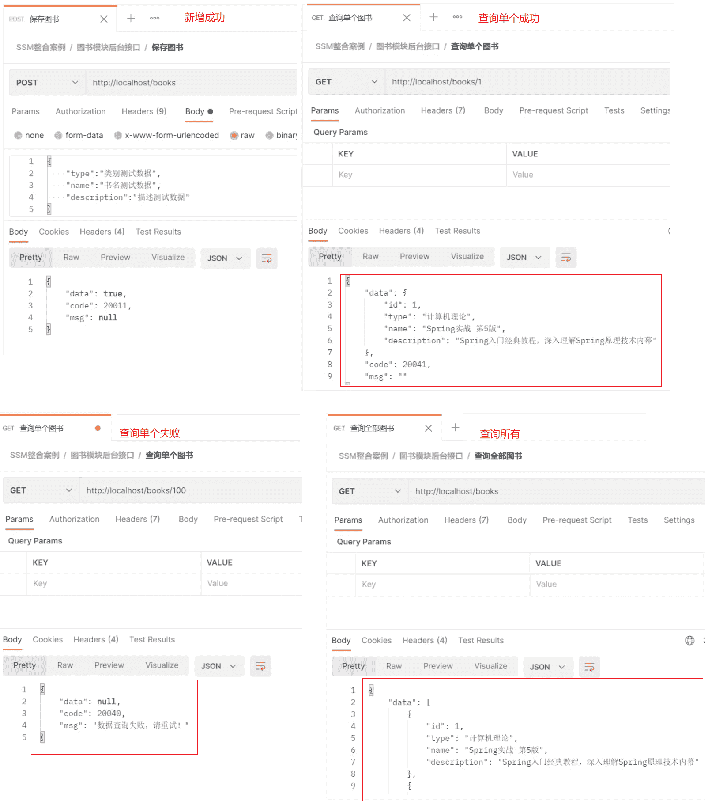
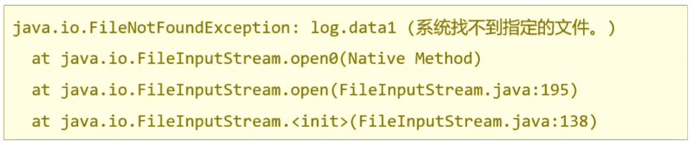

整合Mybatis、Spring和SpringMVC三个框架。
(1) 创建工程
创建一个Maven的web工程
pom.xml添加SSM需要的依赖jar包
编写Web项目的入口配置类，实现AbstractAnnotationConfigDispatcherServletInitializer重写以下方法
getRootConfigClasses() ：返回Spring的配置类->需要SpringConfig 配置类
getServletConfigClasses() ：返回SpringMVC的配置类->需要SpringMvcConfig 配置类
getServletMappings() : 设置SpringMVC请求拦截路径规则
getServletFilters() ：设置过滤器，解决POST请求中文乱码问题
(2)SSM整合[重点是各个配置的编写 ]
Spring
MyBatis
MybatisConfig
JdbcConfig
jdbc.properties
SpringMVC
ServletConfig
SpringMvcConfig
SpringConfig
标识该类为配置类 @Configuration
扫描Service所在的包 @ComponentScan
在Service层要管理事务 @EnableTransactionManagement
读取外部的properties配置文件 @PropertySource
整合Mybatis需要引入Mybatis相关配置类 @Import
第三方数据源配置类 JdbcConfig
构建DataSource数据源，DruidDataSouroce,需要注入数据库连接四要素， @Bean @Value
构建平台事务管理器，DataSourceTransactionManager,@Bean
Mybatis配置类 MybatisConfig
构建SqlSessionFactoryBean并设置别名扫描与数据源，@Bean
构建MapperScannerConfigurer并设置DAO层的包扫描
SpringMvcConfig
标识该类为配置类 @Configuration
扫描Controller所在的包 @ComponentScan
开启SpringMVC注解支持 @EnableWebMvc
(3)功能模块[与具体的业务模块有关]
表与实体类
dao(接口 + 自动代理)
service(接口 + 实现类)
controller
创建数据库表
根据数据库表创建对应的模型类
通过Dao层完成数据库表的增删改查(接口+自动代理)
编写Service层[Service接口+实现类]
@Service
@Transactional
整合Junit对业务层进行单元测试
@RunWith
@ContextConfiguration
@Test
编写Controller层
接收请求 @RequestMapping @GetMapping @PostMapping @PutMapping @DeleteMapping
接收数据 简单、POJO、嵌套POJO、集合、数组、JSON数据类型
@RequestParam
@PathVariable
@RequestBody
转发业务层
响应结果
可以使用Maven的骨架创建
pom.xml添加SSM所需要的依赖jar包
1 2 3 4 5 6 7 8 9 10 11 12 13 14 15 16 17 18 19 20 21 22 23 24 25 26 27 28 29 30 31 32 33 34 35 36 37 38 39 40 41 42 43 44 45 46 47 48 49 50 51 52 53 54 55 56 57 58 59 60 61 62 63 64 65 66 67 68 69 70 71 72 73 74 75 76 77 78 79 80 81 82 83 84 85 86 87 88 89 90 91 <?xml version="1.0" encoding="UTF-8" ?> <project xmlns ="http://maven.apache.org/POM/4.0.0" xmlns:xsi ="http://www.w3.org/2001/XMLSchema-instance" xsi:schemaLocation ="http://maven.apache.org/POM/4.0.0 http://maven.apache.org/xsd/maven-4.0.0.xsd" > <modelVersion > 4.0.0</modelVersion > <groupId > com.itheima</groupId > <artifactId > springmvc_08_ssm</artifactId > <version > 1.0-SNAPSHOT</version > <packaging > war</packaging > <dependencies > <dependency > <groupId > org.springframework</groupId > <artifactId > spring-webmvc</artifactId > <version > 5.2.10.RELEASE</version > </dependency > <dependency > <groupId > org.springframework</groupId > <artifactId > spring-jdbc</artifactId > <version > 5.2.10.RELEASE</version > </dependency > <dependency > <groupId > org.springframework</groupId > <artifactId > spring-test</artifactId > <version > 5.2.10.RELEASE</version > </dependency > <dependency > <groupId > org.mybatis</groupId > <artifactId > mybatis</artifactId > <version > 3.5.6</version > </dependency > <dependency > <groupId > org.mybatis</groupId > <artifactId > mybatis-spring</artifactId > <version > 1.3.0</version > </dependency > <dependency > <groupId > mysql</groupId > <artifactId > mysql-connector-java</artifactId > <version > 5.1.47</version > </dependency > <dependency > <groupId > com.alibaba</groupId > <artifactId > druid</artifactId > <version > 1.1.16</version > </dependency > <dependency > <groupId > junit</groupId > <artifactId > junit</artifactId > <version > 4.12</version > <scope > test</scope > </dependency > <dependency > <groupId > javax.servlet</groupId > <artifactId > javax.servlet-api</artifactId > <version > 3.1.0</version > <scope > provided</scope > </dependency > <dependency > <groupId > com.fasterxml.jackson.core</groupId > <artifactId > jackson-databind</artifactId > <version > 2.9.0</version > </dependency > </dependencies > <build > <plugins > <plugin > <groupId > org.apache.tomcat.maven</groupId > <artifactId > tomcat7-maven-plugin</artifactId > <version > 2.1</version > <configuration > <port > 80</port > <path > /</path > </configuration > </plugin > </plugins > </build > </project >
1 2 3 4 5 6 7 8 9 10 11 12 13 14 15 16 17 springmvc_08_ssm ├── src │ ├── main │ │ ├── java │ │ │ └── com.itheima │ │ │ ├── config │ │ │ ├── controller │ │ │ ├── dao │ │ │ ├── domain │ │ │ └── service │ │ │ └── impl │ │ ├── resources | | | | | └── webapp | | │ └── test └── pom.xml
config目录存放的是相关的配置类
controller编写的是Controller类
dao存放的是Dao接口，因为使用的是Mapper接口代理方式，所以没有实现类包
service存的是Service接口，impl存放的是Service实现类
resources:存入的是配置文件，如Jdbc.properties
webapp:目录可以存放静态资源
test/java:存放的是测试类
1 2 3 4 5 6 7 @Configuration @ComponentScan({"com.itheima.service"}) @PropertySource("classpath:jdbc.properties") @Import({JdbcConfig.class,MyBatisConfig.class}) @EnableTransactionManagement public class SpringConfig {}
1 2 3 4 5 6 7 8 9 10 11 12 13 14 15 16 17 18 19 20 21 22 23 24 25 26 27 public class JdbcConfig { @Value("${jdbc.driver}") private String driver; @Value("${jdbc.url}") private String url; @Value("${jdbc.username}") private String username; @Value("${jdbc.password}") private String password; @Bean public DataSource dataSource () { DruidDataSource dataSource = new DruidDataSource (); dataSource.setDriverClassName(driver); dataSource.setUrl(url); dataSource.setUsername(username); dataSource.setPassword(password); return dataSource; } @Bean public PlatformTransactionManager transactionManager (DataSource dataSource) { DataSourceTransactionManager ds = new DataSourceTransactionManager (); ds.setDataSource(dataSource); return ds; } }
1 2 3 4 5 6 7 8 9 10 11 12 13 14 15 16 public class MyBatisConfig { @Bean public SqlSessionFactoryBean sqlSessionFactory (DataSource dataSource) { SqlSessionFactoryBean factoryBean = new SqlSessionFactoryBean (); factoryBean.setDataSource(dataSource); factoryBean.setTypeAliasesPackage("com.itheima.domain" ); return factoryBean; } @Bean public MapperScannerConfigurer mapperScannerConfigurer () { MapperScannerConfigurer msc = new MapperScannerConfigurer (); msc.setBasePackage("com.itheima.dao" ); return msc; } }
在resources下提供jdbc.properties,设置数据库连接四要素
1 2 3 4 jdbc.driver =com.mysql.jdbc.Driver jdbc.url =jdbc:mysql://localhost:3306/ssm_db jdbc.username =root jdbc.password =root
1 2 3 4 5 @Configuration @ComponentScan("com.itheima.controller") @EnableWebMvc public class SpringMvcConfig {}
1 2 3 4 5 6 7 8 9 10 11 12 13 14 15 16 17 18 19 20 21 22 public class ServletConfig extends AbstractAnnotationConfigDispatcherServletInitializer { protected Class<?>[] getRootConfigClasses() { return new Class []{SpringConfig.class}; } protected Class<?>[] getServletConfigClasses() { return new Class []{SpringMvcConfig.class}; } protected String[] getServletMappings() { return new String []{"/" }; } @Override protected Filter[] getServletFilters() { CharacterEncodingFilter filter = new CharacterEncodingFilter (); filter.setEncoding("utf-8" ); return new Filter []{filter}; } }
至此SSM整合的环境就已经搭建好了。在这个环境上，如何进行功能模块的开发呢?
需求:对表tbl_book进行新增、修改、删除、根据ID查询和查询所有
1 2 3 4 5 6 7 8 9 10 11 12 13 14 15 16 17 18 19 create database ssm_db character set utf8;use ssm_db; create table tbl_book( id int primary key auto_increment, type varchar (20 ), name varchar (50 ), description varchar (255 ) ) create database ssm_db character set utf8;use ssm_db; create table tbl_book( id int primary key auto_increment, type varchar (20 ), name varchar (50 ), description varchar (255 ) ) insert into tbl_book(id,type,name,description) values (1 ,'计算机理论' ,'Spring实战 第五版' ,'Spring入门经典教程，深入理解Spring原理技术内幕' ),(2 ,'计算机理论' ,'Spring 5核心原理与30个类手写实践' ,'十年沉淀之作，手写Spring精华思想' ),(3 ,'计算机理论' ,'Spring 5设计模式' ,'深入Spring源码刨析Spring源码中蕴含的10大设计模式' ),(4 ,'计算机理论' ,'Spring MVC+Mybatis开发从入门到项目实战' ,'全方位解析面向Web应用的轻量级框架，带你成为Spring MVC开发高手' ),(5 ,'计算机理论' ,'轻量级Java Web企业应用实战' ,'源码级刨析Spring框架，适合已掌握Java基础的读者' ),(6 ,'计算机理论' ,'Java核心技术 卷Ⅰ 基础知识(原书第11版)' ,'Core Java第11版，Jolt大奖获奖作品，针对Java SE9、10、11全面更新' ),(7 ,'计算机理论' ,'深入理解Java虚拟机' ,'5个纬度全面刨析JVM,大厂面试知识点全覆盖' ),(8 ,'计算机理论' ,'Java编程思想(第4版)' ,'Java学习必读经典，殿堂级著作！赢得了全球程序员的广泛赞誉' ),(9 ,'计算机理论' ,'零基础学Java(全彩版)' ,'零基础自学编程的入门图书，由浅入深，详解Java语言的编程思想和核心技术' ),(10 ,'市场营销' ,'直播就这么做:主播高效沟通实战指南' ,'李子柒、李佳奇、薇娅成长为网红的秘密都在书中' ),(11 ,'市场营销' ,'直播销讲实战一本通' ,'和秋叶一起学系列网络营销书籍' ),(12 ,'市场营销' ,'直播带货:淘宝、天猫直播从新手到高手' ,'一本教你如何玩转直播的书，10堂课轻松实现带货月入3W+' );
1 2 3 4 5 6 7 public class Book { private Integer id; private String type; private String name; private String description; }
1 2 3 4 5 6 7 8 9 10 11 12 13 14 15 16 17 18 public interface BookDao { @Insert("insert into tbl_book (type,name,description) values(#{type},#{name},#{description})") public void save (Book book) ; @Update("update tbl_book set type = #{type}, name = #{name}, description = #{description} where id = #{id}") public void update (Book book) ; @Delete("delete from tbl_book where id = #{id}") public void delete (Integer id) ; @Select("select * from tbl_book where id = #{id}") public Book getById (Integer id) ; @Select("select * from tbl_book") public List<Book> getAll () ; }
1 2 3 4 5 6 7 8 9 10 11 12 13 14 15 16 17 18 19 20 21 22 23 24 25 26 27 28 29 30 31 32 33 34 35 36 @Transactional public interface BookService { public boolean save (Book book) ; public boolean update (Book book) ; public boolean delete (Integer id) ; public Book getById (Integer id) ; public List<Book> getAll () ; }
1 2 3 4 5 6 7 8 9 10 11 12 13 14 15 16 17 18 19 20 21 22 23 24 25 26 27 28 @Service public class BookServiceImpl implements BookService { @Autowired private BookDao bookDao; public boolean save (Book book) { bookDao.save(book); return true ; } public boolean update (Book book) { bookDao.update(book); return true ; } public boolean delete (Integer id) { bookDao.delete(id); return true ; } public Book getById (Integer id) { return bookDao.getById(id); } public List<Book> getAll () { return bookDao.getAll(); } }
说明:
1 2 3 4 5 6 7 8 9 10 11 12 13 14 15 16 17 18 19 20 21 22 23 24 25 26 27 28 29 30 31 32 @RestController @RequestMapping("/books") public class BookController { @Autowired private BookService bookService; @PostMapping public boolean save (@RequestBody Book book) { return bookService.save(book); } @PutMapping public boolean update (@RequestBody Book book) { return bookService.update(book); } @DeleteMapping("/{id}") public boolean delete (@PathVariable Integer id) { return bookService.delete(id); } @GetMapping("/{id}") public Book getById (@PathVariable Integer id) { return bookService.getById(id); } @GetMapping public List<Book> getAll () { return bookService.getAll(); } }
接下来就先把业务层的代码使用Spring整合Junit的知识点进行单元测试:
1 2 3 4 5 @RunWith(SpringJUnit4ClassRunner.class) @ContextConfiguration(classes = SpringConfig.class) public class BookServiceTest {}
1 2 3 4 5 6 @RunWith(SpringJUnit4ClassRunner.class) @ContextConfiguration(classes = SpringConfig.class) public class BookServiceTest { @Autowired private BookService bookService; }
先来对查询进行单元测试。
1 2 3 4 5 6 7 8 9 10 11 12 13 14 15 16 17 18 19 20 @RunWith(SpringJUnit4ClassRunner.class) @ContextConfiguration(classes = SpringConfig.class) public class BookServiceTest { @Autowired private BookService bookService; @Test public void testGetById () { Book book = bookService.getById(1 ); System.out.println(book); } @Test public void testGetAll () { List<Book> all = bookService.getAll(); System.out.println(all); } }
Postman使用POST方法:http://localhost/books
1 2 3 4 5 { "type" : "类别测试数据" , "name" : "书名测试数据" , "description" : "描述测试数据" }
Postman使用PUT方法:http://localhost/books
1 2 3 4 5 6 { "id" : 13 , "type" : "类别测试数据" , "name" : "书名测试数据666" , "description" : "描述测试数据" }
Postman使用DELETE方法:http://localhost/books/14
Postman使用GET方法:http://localhost/books/1
返回结果：
1 2 3 4 5 6 { "id": 1, "type": "计算机理论", "name": "Spring实战 第五版", "description": "Spring入门经典教程，深入理解Spring原理技术内幕" }
http://localhost/books
SSM整合以及功能模块开发完成后，接下来，在上述案例的基础上分析下有哪些问题需要去解决下。首先第一个问题是:
在Controller层增删改返回给前端的是boolean类型数据
true
在Controller层查询单个返回给前端的是对象
1 2 3 4 5 6 { "id": 1, "type": "计算机理论", "name": "Spring实战 第五版", "description": "Spring入门经典教程，深入理解Spring原理技术内幕" }
在Controller层查询所有返回给前端的是集合对象
1 2 3 4 5 6 7 8 9 10 11 12 13 14 15 [ { "id": 1, "type": "计算机理论", "name": "Spring实战 第五版", "description": "Spring入门经典教程，深入理解Spring原理技术内幕" }, { "id": 2, "type": "计算机理论", "name": "Spring 5核心原理与30个类手写实践", "description": "十年沉淀之作，手写Spring精华思想" } ...... ]
目前就已经有三种数据类型返回给前端，如果随着业务的增长，需要返回的数据类型会越来越多。对于前端开发人员在解析数据的时候就比较凌乱了，所以对于前端来说，如果后台能够返回一个统一的数据结果，前端在解析的时候就可以按照一种方式进行解析。开发就会变得更加简单。
所以就想能不能将返回结果的数据进行统一，具体如何来做，大体的思路为:
为了封装返回的结果数据:创建结果模型类，封装数据到data属性中
为了封装返回的数据是何种操作及是否操作成功:封装操作结果到code属性中
操作失败后为了封装返回的错误信息:封装特殊消息到message(msg)属性中
根据分析，可以设置统一数据返回结果类和code定义类在controller文件夹中
1 2 3 4 5 6 7 8 9 10 11 12 13 14 15 16 17 18 19 20 public class Result { private Object data; private Integer code; private String msg; public Result () { } public Result (Object data, Integer code) { this .data = data; this .code = code; } public Result (Object data, Integer code, String msg) { this .data = data; this .code = code; this .msg = msg; } }
**注意:**Result类名及类中的字段并不是固定的，可以根据需要自行增减提供若干个构造方法，方便操作。
1 2 3 4 5 6 7 8 9 10 11 12 public class Code { public static final Integer SAVE_OK = 20011; public static final Integer DELETE_OK = 20021; public static final Integer UPDATE_OK = 20031; public static final Integer GET_OK = 20041; public static final Integer SAVE_ERR = 20010; public static final Integer DELETE_ERR = 20020; public static final Integer UPDATE_ERR = 20030; public static final Integer GET_ERR = 20040; }
前面已经分析了如何封装返回结果数据，具体在项目中该如何实现，通过个例子来操作一把
创建一个Web的Maven项目
pom.xml添加SSM整合所需jar包
创建对应的配置类
编写Controller、Service接口、Service实现类、Dao接口和模型类
resources下提供jdbc.properties配置文件
因为这个项目环境的内容和SSM整合的内容是一致的，所以就不在把代码粘出来了，大家在练习的时候可以在前面整合的例子案例环境下，进行本节内容的开发。
最终创建好的项目结构如下:
1 2 3 4 5 6 7 8 9 10 11 12 13 14 15 16 17 18 19 20 21 22 23 24 25 26 27 28 springmvc_09_result ├── src │ ├── main │ │ ├── java │ │ │ └── com.itheima │ │ │ ├── config │ │ │ │ ├── JdbcConfig │ │ │ │ ├── MyBatisConfig │ │ │ │ ├── ServletConfig │ │ │ │ ├── SpringConfig │ │ │ │ └── SpringMvcConfig │ │ │ ├── controller │ │ │ │ ├── BookController │ │ │ │ ├── Code │ │ │ │ └── Result │ │ │ ├── dao │ │ │ │ └── BookDao │ │ │ ├── domain │ │ │ │ └── Book │ │ │ └── service │ │ │ ├── impl │ │ │ │ └── BookServiceImpl │ │ │ └── BookService │ │ └── resources │ │ └── jdbc.properties │ └── webapp └── test └── pom.xml
对于结果封装，应该是在表现层进行处理，所以把结果类放在controller包下，当然你也可以放在domain包，这个都是可以的，具体如何实现结果封装，具体的步骤为:
1 2 3 4 5 6 7 8 9 10 11 12 13 14 15 16 17 18 19 20 21 22 23 public class Result { private Object data; private Integer code; private String msg; public Result () { } public Result (Integer code,Object data) { this .data = data; this .code = code; } public Result (Integer code, Object data, String msg) { this .data = data; this .code = code; this .msg = msg; } }
1 2 3 4 5 6 7 8 9 10 11 12 13 public class Code { public static final Integer SAVE_OK = 20011 ; public static final Integer DELETE_OK = 20021 ; public static final Integer UPDATE_OK = 20031 ; public static final Integer GET_OK = 20041 ; public static final Integer SAVE_ERR = 20010 ; public static final Integer DELETE_ERR = 20020 ; public static final Integer UPDATE_ERR = 20030 ; public static final Integer GET_ERR = 20040 ; }
**注意:**code类中的常量设计也不是固定的，可以根据需要自行增减，例如将查询再进行细分为GET_OK,GET_ALL_OK,GET_PAGE_OK等。
1 2 3 4 5 6 7 8 9 10 11 12 13 14 15 16 17 18 19 20 21 22 23 24 25 26 27 28 29 30 31 32 33 34 35 36 37 38 39 40 41 42 @RestController @RequestMapping("/books") public class BookController { @Autowired private BookService bookService; @PostMapping public Result save (@RequestBody Book book) { boolean flag = bookService.save(book); return new Result (flag ? Code.SAVE_OK:Code.SAVE_ERR,flag); } @PutMapping public Result update (@RequestBody Book book) { boolean flag = bookService.update(book); return new Result (flag ? Code.UPDATE_OK:Code.UPDATE_ERR,flag); } @DeleteMapping("/{id}") public Result delete (@PathVariable Integer id) { boolean flag = bookService.delete(id); return new Result (flag ? Code.DELETE_OK:Code.DELETE_ERR,flag); } @GetMapping("/{id}") public Result getById (@PathVariable Integer id) { Book book = bookService.getById(id); Integer code = book != null ? Code.GET_OK : Code.GET_ERR; String msg = book != null ? "" : "数据查询失败，请重试！" ; return new Result (code,book,msg); } @GetMapping public Result getAll () { List<Book> bookList = bookService.getAll(); Integer code = bookList != null ? Code.GET_OK : Code.GET_ERR; String msg = bookList != null ? "" : "数据查询失败，请重试！" ; return new Result (code,bookList,msg); } }

至此，的返回结果就已经能以一种统一的格式返回给前端。前端根据返回的结果，先从中获取code,根据code判断，如果成功则取data属性的值，如果失败，则取msg中的值做提示。
在讲解这一部分知识点之前，先来演示个效果，修改BookController类的getById方法
1 2 3 4 5 6 7 8 9 10 11 @GetMapping("/{id}") public Result getById (@PathVariable Integer id) { if (id==1 ){ int i = 1 /0 ; } Book book = bookService.getById(id); Integer code = book != null ? Code.GET_OK : Code.GET_ERR; String msg = book != null ? "" : "数据查询失败，请重试！" ; return new Result (code,book,msg); }
重新启动运行项目，使用PostMan发送请求，当传入的id为1，则会出现如下效果：
1 HTTP Status 500 - Request processing failed; nested exception is java.lang.ArithmeticException: / by zero
前端接收到这个信息后和之前约定的格式不一致，这个问题该如何解决?
在解决问题之前，先来看下异常的种类及出现异常的原因:
框架内部抛出的异常：因使用不合规导致
数据层抛出的异常：因外部服务器故障导致（例如：服务器访问超时）
业务层抛出的异常：因业务逻辑书写错误导致（例如：遍历业务书写操作，导致索引异常等）
表现层抛出的异常：因数据收集、校验等规则导致（例如：不匹配的数据类型间导致异常）
工具类抛出的异常：因工具类书写不严谨不够健壮导致（例如：必要释放的连接长期未释放等）
看完上面这些出现异常的位置，你会发现，在开发的任何一个位置都有可能出现异常，而且这些异常是不能避免的。所以就得将异常进行处理。
思考
各个层级均出现异常，异常处理代码书写在哪一层?
所有的异常均抛出到表现层进行处理
异常的种类很多，表现层如何将所有的异常都处理到呢?
异常分类
表现层处理异常，每个方法中单独书写，代码书写量巨大且意义不强，如何解决?
AOP
对于上面这些问题及解决方案，SpringMVC已经为提供了一套解决方案:
创建一个Web的Maven项目
pom.xml添加SSM整合所需jar包
创建对应的配置类
编写Controller、Service接口、Service实现类、Dao接口和模型类
resources下提供jdbc.properties配置文件
内容参考前面的项目或者直接使用前面的项目进行本节内容的学习。
最终创建好的项目结构跟前面的一样，唯一不同是在controller文件夹中新建异常处理类ProjectExceptionAdvice
1 2 3 4 5 6 7 8 9 10 @RestControllerAdvice public class ProjectExceptionAdvice { @ExceptionHandler(Exception.class) public void doException (Exception ex) { System.out.println("嘿嘿,异常你哪里跑！" ) } }
确保SpringMvcConfig能够扫描到异常处理器类
修改BookController的getById方法，添加int i = 1/0.
1 2 3 4 5 6 7 8 @GetMapping("/{id}") public Result getById (@PathVariable Integer id) { int i = 1 /0 ; Book book = bookService.getById(id); Integer code = book != null ? Code.GET_OK : Code.GET_ERR; String msg = book != null ? "" : "数据查询失败，请重试！" ; return new Result (code,book,msg); }
控制台输出：
说明异常已经被拦截并执行了doException方法。
1 2 3 4 5 6 7 8 9 10 11 @RestControllerAdvice public class ProjectExceptionAdvice { @ExceptionHandler(Exception.class) public Result doException (Exception ex) { System.out.println("嘿嘿,异常你哪里跑！" ) return new Result (666 ,null ,"嘿嘿,异常你哪里跑！" ); } }
启动运行程序，POST测试选择GET方法：http://localhost/books/1
返回结果为：
1 2 3 4 5 { "data": null, "code": 666, "msg": "嘿嘿,异常你哪里跑！" }
至此，就算后台执行的过程中抛出异常，最终也能按照和前端约定好的格式返回给前端。
名称
@RestControllerAdvice
类型
类注解
位置
Rest风格开发的控制器增强类定义上方
作用
为Rest风格开发的控制器类做增强
**说明:**此注解自带@ResponseBody注解与@Component注解，具备对应的功能
名称
@ExceptionHandler
类型
方法注解
位置
专用于异常处理的控制器方法上方
作用
设置指定异常的处理方案，功能等同于控制器方法，
**说明：**此类方法可以根据处理的异常不同，制作多个方法分别处理对应的异常
异常处理器已经能够使用了，那么在咱们的项目中该如何来处理异常呢?
因为异常的种类有很多，如果每一个异常都对应一个@ExceptionHandler，那得写多少个方法来处理各自的异常，所以在处理异常之前，需要对异常进行一个分类:
业务异常（BusinessException）
规范的用户行为产生的异常
不规范的用户行为操作产生的异常
系统异常（SystemException）
其他异常（Exception）
编程人员未预期到的异常，如:用到的文件不存在

将异常分类以后，针对不同类型的异常，要提供具体的解决方案:
业务异常（BusinessException）
系统异常（SystemException）
发送固定消息传递给用户，安抚用户
系统繁忙，请稍后再试
系统正在维护升级，请稍后再试
系统出问题，请联系系统管理员等
发送特定消息给运维人员，提醒维护
记录日志
发消息和记录日志对用户来说是不可见的，属于后台程序
其他异常（Exception）
发送固定消息传递给用户，安抚用户
发送特定消息给编程人员，提醒维护（纳入预期范围内）
记录日志
思路:
1.先通过自定义异常，完成BusinessException和SystemException的定义
2.将其他异常包装成自定义异常类型
3.在异常处理器类中对不同的异常进行处理
新建exception文件夹存放异常类
1 2 3 4 5 6 7 8 9 10 11 12 13 14 15 16 17 18 19 20 21 22 23 24 25 26 27 28 29 30 31 32 33 34 35 36 37 38 39 40 41 42 43 44 45 46 47 48 49 public class SystemException extends RuntimeException { private Integer code; public Integer getCode () { return code; } public void setCode (Integer code) { this .code = code; } public SystemException (Integer code, String message) { super (message); this .code = code; } public SystemException (Integer code, String message, Throwable cause) { super (message, cause); this .code = code; } } public class BusinessException extends RuntimeException { private Integer code; public Integer getCode () { return code; } public void setCode (Integer code) { this .code = code; } public BusinessException (Integer code, String message) { super (message); this .code = code; } public BusinessException (Integer code, String message, Throwable cause) { super (message, cause); this .code = code; } }
说明:
让自定义异常类继承RuntimeException的好处是，后期在抛出这两个异常的时候，就不用在try…catch…或throws了
自定义异常类中添加code属性的原因是为了更好的区分异常是来自哪个业务的
假如在BookServiceImpl的getById方法抛异常了，该如何来包装呢?
1 2 3 4 5 6 7 8 9 10 11 12 13 public Book getById (Integer id) { if (id == 1 ){ throw new BusinessException (Code.BUSINESS_ERR,"请不要使用你的技术挑战我的耐性!" ); } try { int i = 1 /0 ; }catch (Exception e){ throw new SystemException (Code.SYSTEM_TIMEOUT_ERR,"服务器访问超时，请重试!" ,e); } return bookDao.getById(id); }
具体的包装方式有：
方式一:try{}catch(){}在catch中重新throw自定义异常即可。
方式二:直接throw自定义异常即可
上面为了使code看着更专业些，在Code类中再新增需要的属性
1 2 3 4 5 6 7 8 9 10 11 12 13 14 15 16 17 18 public class Code { public static final Integer SAVE_OK = 20011 ; public static final Integer DELETE_OK = 20021 ; public static final Integer UPDATE_OK = 20031 ; public static final Integer GET_OK = 20041 ; public static final Integer SAVE_ERR = 20010 ; public static final Integer DELETE_ERR = 20020 ; public static final Integer UPDATE_ERR = 20030 ; public static final Integer GET_ERR = 20040 ; public static final Integer SYSTEM_ERR = 50001 ; public static final Integer SYSTEM_TIMEOUT_ERR = 50002 ; public static final Integer SYSTEM_UNKNOW_ERR = 59999 ; public static final Integer BUSINESS_ERR = 60002 ; }
1 2 3 4 5 6 7 8 9 10 11 12 13 14 15 16 17 18 19 20 21 22 23 24 25 26 @RestControllerAdvice public class ProjectExceptionAdvice { @ExceptionHandler(SystemException.class) public Result doSystemException (SystemException ex) { return new Result (ex.getCode(),null ,ex.getMessage()); } @ExceptionHandler(BusinessException.class) public Result doBusinessException (BusinessException ex) { return new Result (ex.getCode(),null ,ex.getMessage()); } @ExceptionHandler(Exception.class) public Result doOtherException (Exception ex) { return new Result (Code.SYSTEM_UNKNOW_ERR,null ,"系统繁忙，请稍后再试！" ); } }
根据ID查询，
如果传入的参数为1，会报BusinessException
如果传入的是其他参数，会报SystemException
对于异常就已经处理完成了，不管后台哪一层抛出异常，都会以与前端约定好的方式进行返回，前端只需要把信息获取到，根据返回的正确与否来展示不同的内容即可。
小结
以后项目中的异常处理方式为: